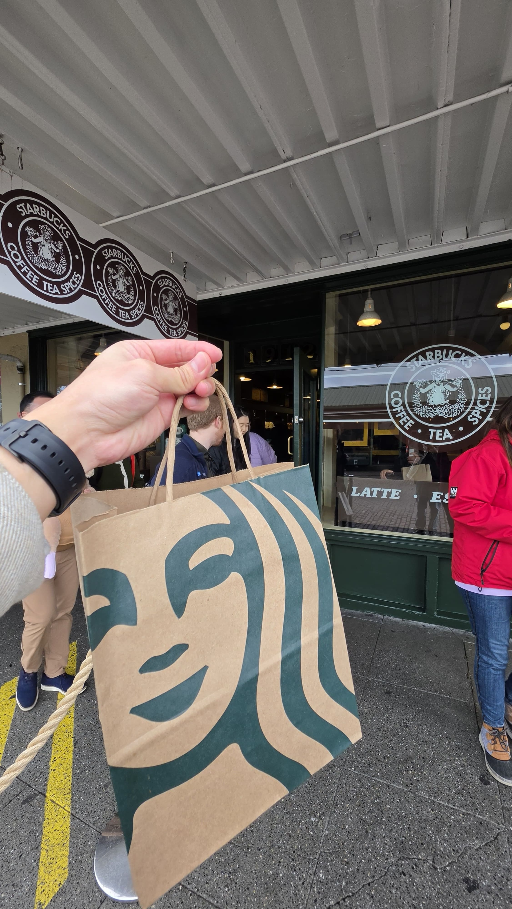
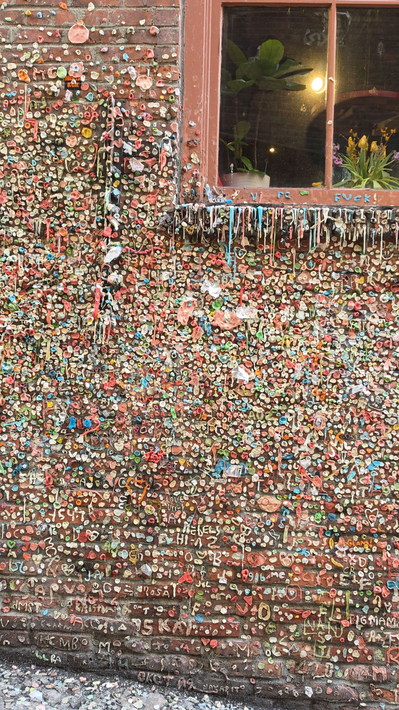
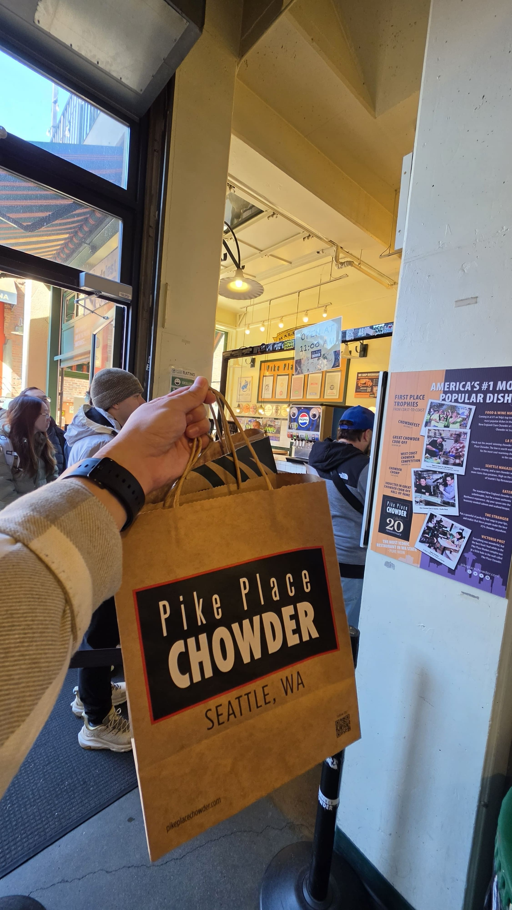
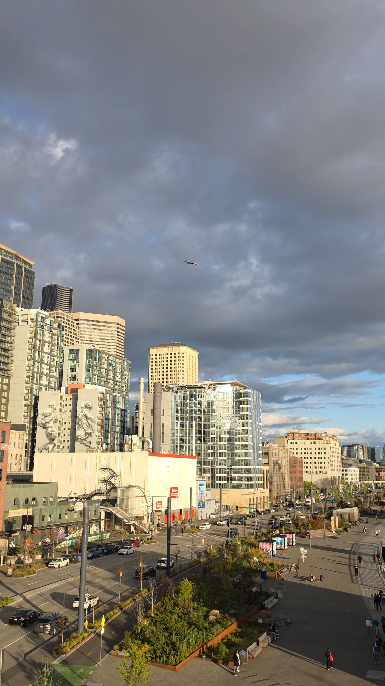
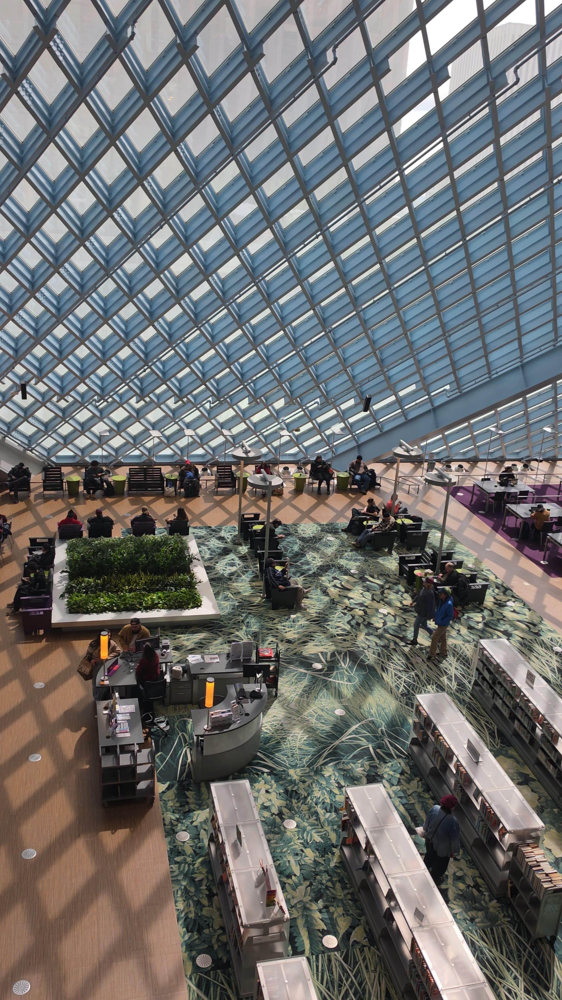
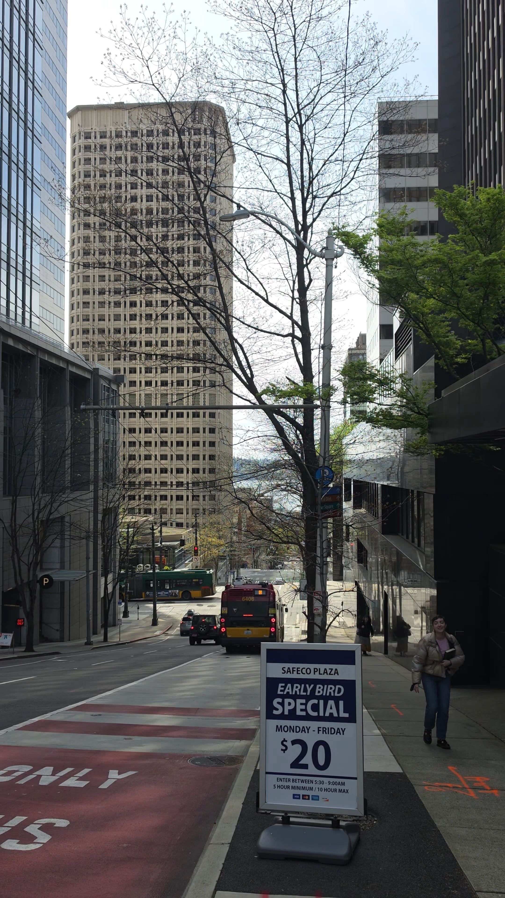
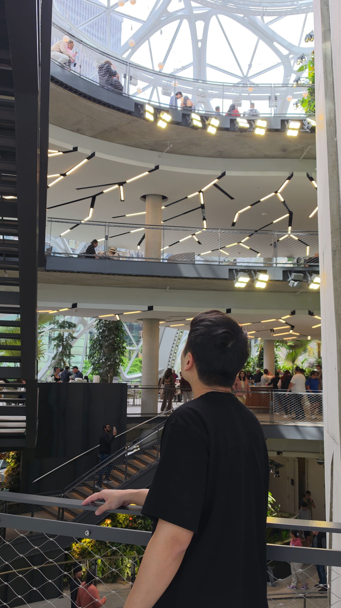
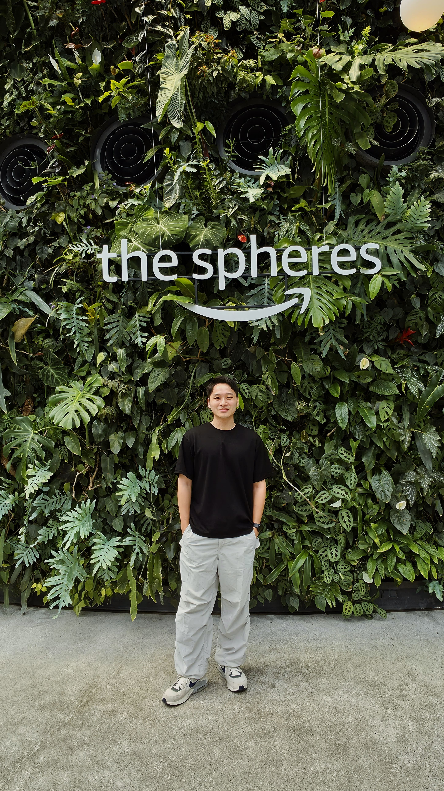
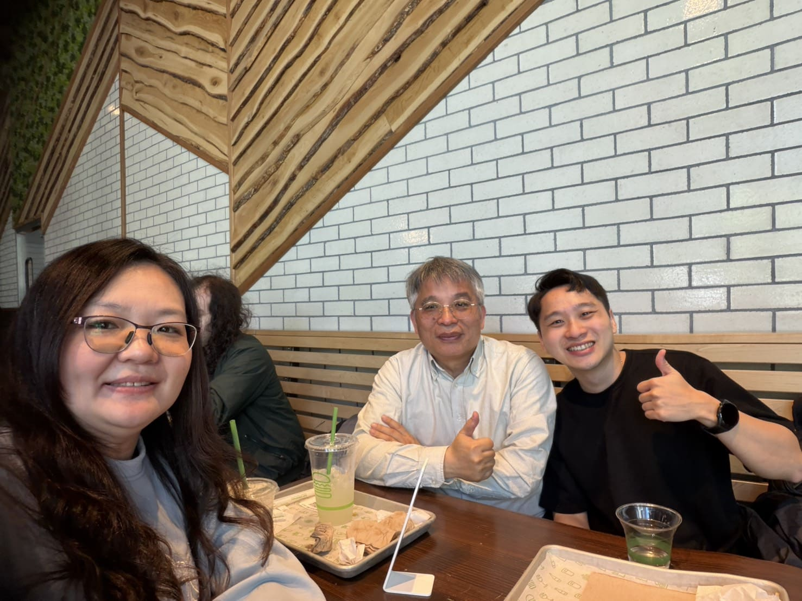
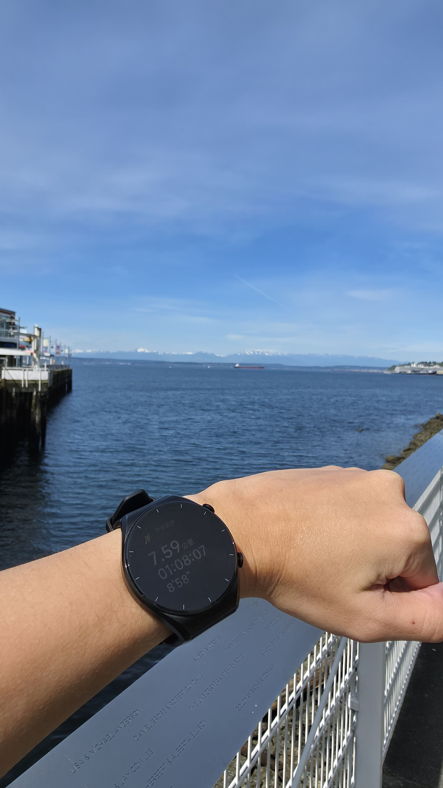

西雅圖適合慢活的生活 悠閒的渡假的地方
Day 1
從台北抵達西雅圖是當地時間5:40am，到民宿checkin大概是8點左右，我住5天4夜的背包客房，價格台幣6830，發現美國住宿都滿貴的
民宿離海邊跟派克市場都很近，走路大概10~15分鐘就到了。
世界上第一家星巴克，logo還是最原始的樣子！

口香糖牆就在派克市場旁邊，不得不說有點噁心

聽說他的巧達濃湯很好喝，但我覺得超級鹹，價格也偏高，一小碗就要12usd左右。

幾乎都在派克市場附近閒逛~


Day 2
去西雅圖著名的華盛頓大學，這裡的櫻花很有名，3~4月是櫻花季，但我去的時候幾乎都凋謝了
華盛頓大學的圖書館也是著名的哈利波特圖書館
後來去到市區的中央圖書館，很大也很美


Day 3
每個月的第一週及第三周的禮拜六，Amazon Sphere有開放給外人可以入內參觀，今天剛好是第三週的禮拜六，到Amazon Sphere，裏面可感受到大自然跟辦公室完美結合，有亞馬遜雨林的意象。


在這裡遇到台灣夫妻，男生是北醫的教授，聊了很多AI對醫療的發展，後來幾個行程也跟著他們走。

先在Space Needle光了一圈後，就前往Kerry Park，這裡的景色是一級棒，尤其住在這附近的都是高級住宅。
Day 4
因為看到許多人都會在海邊慢跑，所以一早也來海邊跑步。結果遇到超多人也在一起跑。而且天氣超級舒服，也不太流汗，景色超級吸引眼球，我每跑一步就停一步。

下午，跟同旅店認識的兩個墨西哥朋友一起來海邊。
這裡真的是hidden gems，可以看到海豹！！而且超級Chill!
晚上，做了人生最瘋狂的事，跟著他們騎著Lime到處狂飆，甚至騎到停車場頂樓，爬到外牆，俯瞰整個街景！
心得
房屋都很漂亮 馬路寬敞 人又不會太多 是一個背包客友善的地方 > 民族多元 交通方便 但是感覺待久了還是會有點無趣
缺點是路上滿滿煙味跟大麻味 如果是住在Downtown會比較常看到吸毒者 但其實大家都習以為常 基本上也不會打擾到對方
除非薪水高 住在這裡生活開銷會很有負擔
另外 這邊搭大眾運輸很多人都逃票 但好像也沒在抓
在這裡我有個驚人發現 我竟然比美國人還E !